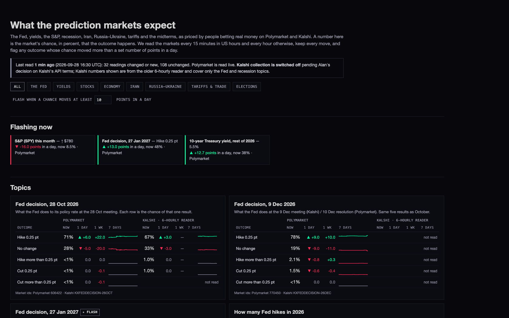

L4 · 28 Sep 2026 · the page: deliverables/20260928/prediction-markets/index.html

Above, at 1680 wide, live data at 16:31 UTC. Fed on 28 Oct: Polymarket 71% for a 0.25-point hike (+6.0 on the day, +22.0 on the week) beside Kalshi 67% (+3.0). Three flashes: SPY this month −16 points, a January hike +13, the 10-year touching 5.5% +12.7.
| Polymarket | Kalshi | |
|---|---|---|
| Public, no account, no key | Yes: Gamma (gamma-api.polymarket.com) for markets and prices, Data API (data-api.polymarket.com/oi) for open interest, CLOB (clob.polymarket.com) for midpoints and price history. All checked today. | Yes: Trade API v2 (api.elections.kalshi.com/trade-api/v2; the docs now also name external-api.kalshi.com, both answer) for series, events, markets, candlesticks. All checked today. |
| Rate limits | Published: Gamma /events 500 requests per 10 s, /markets 300, search 350; CLOB price history 1,000; Data API 800. We use about 30 requests a pass. | Published as a token budget per tier; Basic is 200 read tokens per second. The cost per request is not stated. We would use about 30 requests a pass, plus about 60 every 6 hours for discovery. |
| Terms | Not verified. The Terms of Use page renders by script and its text could not be read from here. Nothing found forbids reading the public data. | A problem. The docs say using the API binds you to Kalshi's Developer Agreement. Two independent summaries quote its section 3 as limiting API use to "facilitating a member's own trading", with caching or redistributing the data disallowed. Kalshi's own page refused our read (HTTP 429), so we could not read the wording ourselves. |
| Coverage of your topics | Everything except the 2-year yield and the effective tariff rate. The only venue with Iran war/ceasefire and Russia–Ukraine ceasefire markets. | The Fed, yields including the 2-year, S&P, recession, Iran nuclear deal, tariffs, elections. No Iran war or Ukraine ceasefire market is open. |
catalyst_odds, running since 24 Sep) — only the Fed and recession topics, and only the four most-held Fed outcomes. Cells it does not cover say "not read".supabase/functions/prediction-markets/topics.json, a plain file with each topic's exact market ids on each venue, its wording, and the rows lined up between venues. Edit it and redeploy to add or change a topic.| Piece | Exact state |
|---|---|
| Table | public.prediction_market_snapshots (topic, venue, event id, market id, outcome, probability, bid, ask, volume, 24 h volume, open interest, end date, time, kind), plus public.prediction_market_runs (one row per pass) and the view public.prediction_market_latest. Read-only to the public key; the collector can only add rows. |
| Function | prediction-markets on scintilla-live, version 3, JWT required. |
| Schedule | pg_cron job 278, prediction-markets, every 15 minutes; it calls only in US hours or at the top of the hour. First scheduled run 16:30:00 UTC, succeeded: 140 read, 32 moved and written, 108 unchanged, no problems. |
| Rows so far | At 16:46 UTC: 213 live rows plus 8,247 rows of loaded history; 4.3 MB in all including indexes (about 514 bytes a row). Scheduled passes at 16:30 and 16:45 each read 140 outcomes and stored only the ones that moved (32 and 41). At that pace a weekday adds about 2,300 rows, about 1.2 MB a day (about 0.4 GB a year); the hard ceiling, if every outcome moved on every pass, is 7,560 rows, about 3.9 MB a day. |
| Rollback | supabase/migrations/20260928_prediction_market_snapshots_ROLLBACK.sql (stops job 278, drops the view and both tables), then supabase functions delete prediction-markets. Nothing else is touched. |
catalyst-odds reader or its 6-hourly job 265.